SoftEther VPN Server安装笔记
文章目录
不知道该说什么好，还是老实的回归老本行吧！
在阿里云上搭建好VPN已经略有时日了，大部分能搜索到的教程都是手动安装、修改配置文件的，对于新手来说尽管有很详尽的教程，可是真正搭建成功还是略复杂的。那有没有更简单的办法呢？图形化的方式？答案当然是，有的！还记得日本筑波大学研发的分布式VPN吗？"分布式"就是，服务器是由广大网友搭建的，这也等同于宣告"IP封锁"的失效，不过应用而来的就是深度包检测。既然官方提供了VPNGate客户端，那么按理说也应该同样提供一个易于使用的服务端！没错的！下面就跟着我的教程来吧！
☆介绍
在说事情之前，先顺路提一下，VPN（虚拟专用网）的本身意图并不是翻墙的，翻墙只是一种用途。
这个神奇的软件叫做SoftEther VPN Server，以下介绍Linux版本的安装使用方法。
SoftEther VPN Server官网，包含多种平台架构的下载地址（需翻墙）：
http://www.softether-download.com/cn.aspx?product=softether
需要的工具：
Linux VPS（以Debian/Ubuntu为例，是Linux就可以）、Windows也可以（而且更简单）。
☆安装SoftEther VPN Server
SSH连到VPS，先更新下并安装gcc等工具
sudo apt-get updatesudo apt-get install build-essential假设当前目录为/root
32位执行这个：
wget https://github.com/SoftEtherVPN/SoftEtherVPN_Stable/releases/download/v4.29-9680-rtm/softether-vpnserver-v4.29-9680-rtm-2019.02.28-linux-x86-32bit.tar.gz64位执行这个：
wget https://github.com/SoftEtherVPN/SoftEtherVPN_Stable/releases/download/v4.29-9680-rtm/softether-vpnserver-v4.29-9680-rtm-2019.02.28-linux-x64-64bit.tar.gz解压缩
tar xvf 文件名来解压缩
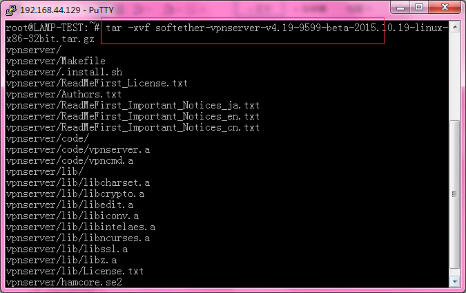
切换到解压出来的目录中
cd vpnservermake连续输入三个1
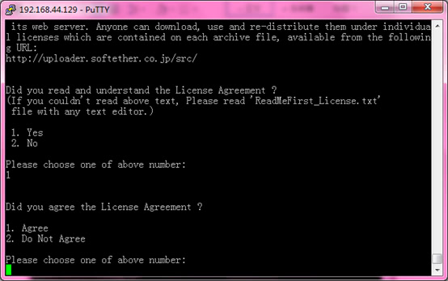
安装完成，请不要删除此目录
终端继续输入
./vpnserver start开启服务
☆设置SoftEther VPN 服务
开启服务：
./vpnserver start关闭服务：
./vpnserver stop服务开启了之后，先进行简单的设置吧。（这里直接用下面介绍的客户端去连接也是可以的）
终端执行
./vpncmd依次1，回车，回车，之后如图所示：
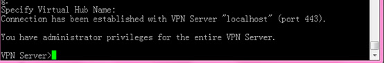
在提示符下输入
ServerPasswordSet输入管理服务器的密码。
两次确定之后，按ctrl+C退出管理。
之后最好将服务器加入到开机启动项中，这样服务器重启了就不用每次都手动到SSH里开启了。当然了最好的办法还是用systemd啦！
终端里依次输入：
vi /etc/rc.local在exit 0之前写入
/root/vpnserver/vpnserver start保存退出即可
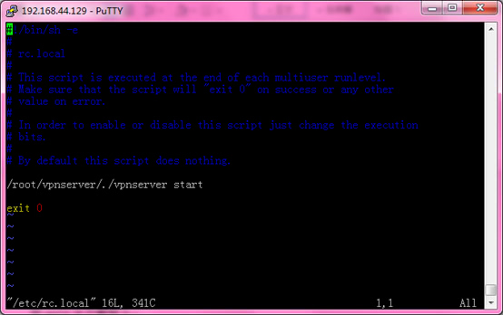
☆管理SoftEther VPN Server服务
设置好账号密码之后，我们就可以切换到带有图形界面的设备上配置服务器啦！考虑到Windows用户居多，在此我们就以Window为例进行讲解（其他版本官网也有下载）。
下载SoftEner VPN Management（不好意思前段时间丢错了链接）
安装时注意选择这个
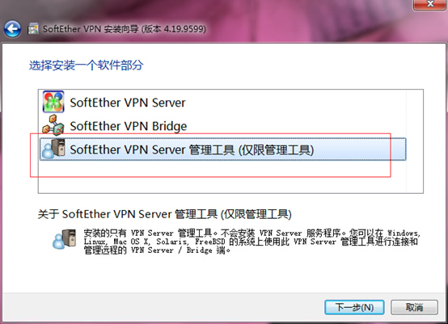
点击新设置，
设置名称、主机名（Linux服务器的IP，此处我用虚拟机做实验所以是内网IP）、管理密码，点确定。
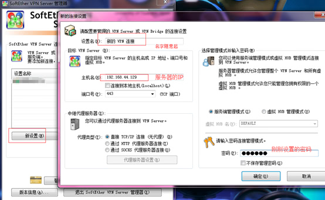
之后选择刚刚新建的设置，点击连接按钮。
关闭两个窗口来到主要的管理界面：
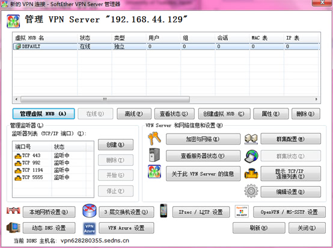
◇1.新建Hub
原来的Hub名字比较难听，为了体验一把，我们就把原来的DEFAULT这个hub删掉，然后点击创建虚拟Hub
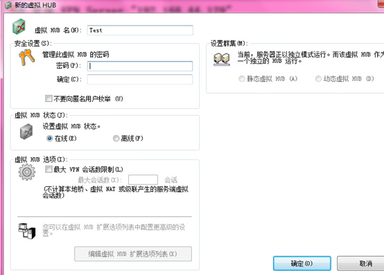
密码可选。
◇2.创建用户
点击管理虚拟Hub-管理用户，左下角的新建。输入用户名，可以使用匿名的方式认证、也可以使用账号密码、甚至是证书认证也可以。
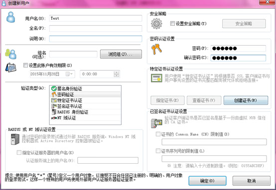
安全策略那里可以设置此用户的最大下载速度、最大上传速度，简直是为了商用而准备的！
◇3.配置SecureNAT
在"虚拟Hub"界面点击"虚拟NAT和虚拟DHCP服务器"
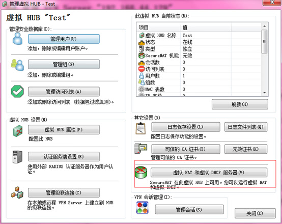
◇4.L2TP Over IPSec/PSK搭建方法：
主界面点击L2TP，勾选全部选项，设置一个预共享密钥（当成WiFi密码随意设置）。
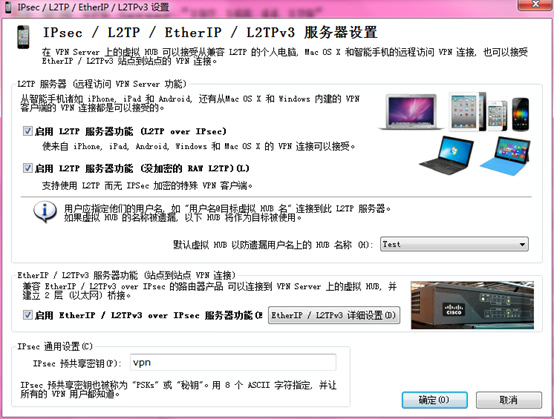
连接方法（Windows），首先按照常理设置好一个VPN连接，连接属性，协议选择L2TP/IPSec，高级设置里选择"预共享密钥"，输入密钥确定即可。
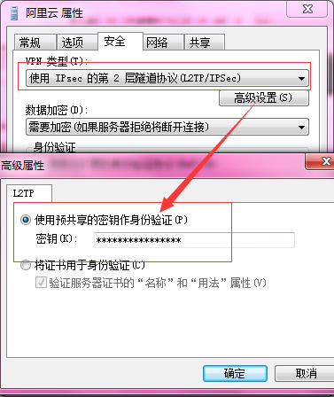
◇5.OpenVPN搭建方法：
(ios及Mac、Linux使用方式参考此文章http://www.vpngate.net/cn/howto_openvpn.aspx)
OpenVPN官网下载地址：https://openvpn.net/index.php/open-source/downloads.html
OpenVPN的配置涉及到证书的生成，但是SoftEther同样提供了比较方便的服务器、客户端配置方法。
服务器配置方法：
管理主界面点击右下角的OpenVPN/MS-SSTP，设置一个UDP端口，然后点击"为OpenVPN生成配置文件"，之后将弹出的zip文档保存，确定。
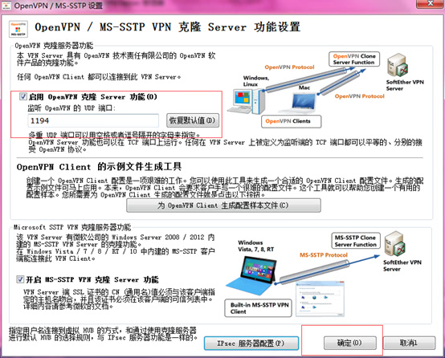
客户端配置方法：
下载并安装OpenVPN客户端，
将刚刚下载的zip文档中l3结尾的文件复制到安装目录下的config文件夹下。
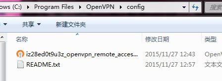
打开openVPN，右下角右键选择Connect，然后输入虚拟Hub里设置的一对账号密码即可。
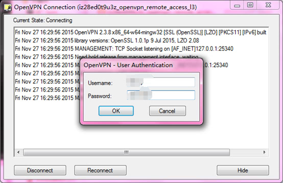
Android：安装客户端程序，右上角菜单依次选择Import-Import Profile from SD Card，选择保存的l3的ovpn文件，输入账号密码点击connect，信任即可。
iOS：APP store搜索下载OpenVPN，需要使用美区账号，我直接提供一组美国地址吧
5200 Zoo Dr，Los Angeles, CA 90027(323) 668-0104简单方便搭建完VPN服务器，甚至是SSTP也顺手完成了。应该要比网上手动安装方便得多。
本站默认采用CC-BY-NC-SA 4.0协议进行授权 转载必须包含本声明，并以超链接形式注明原作者和本文原始地址


评论
205 条评论